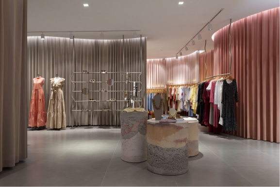

Nas unidades curriculares “Projetar design de interiores residencial” e “Projetar design de interiores corporativo”, você estudou como os conceitos de leiaute são aplicados ao design de interiores desses locais. Nas residências, foi visto que a setorização e os ambientes não têm diferenças entre os diversos tamanhos de moradia. Os escritórios, apesar de já apresentarem certa variedade, ainda tinham uma setorização que, de certo modo, se repetia nos diferentes tipos de empresas. Nos pontos de venda, isso será visto novamente, pois a setorização é algo que se repete nos diferentes ambientes comerciais, mas com uma grande diferença no escopo e no tamanho dos espaços.
Loja de roupas Mango Teen
Fonte: ArchDaily (2022)
Loja de roupas Mango Teen. À esquerda, está posicionado o caixa. Piso, paredes, móveis e teto são em tons de verde. À direita, estão araras e mesas com vestuário, com piso, paredes, móveis e teto em tons de laranja.
A setorização dos pontos de venda depende dos dois grandes grupos de usuários desses espaços: funcionários e público-alvo. Resumidamente, existe um espaço restrito a funcionários, para atividades internas, e um espaço para uso do público-alvo, que também será frequentado pelos funcionários. No espaço restrito, o leiaute tem como característica a funcionalidade. Já no espaço do público-alvo, o leiaute é pensado principalmente para que a experiência de compra seja satisfatória, fazendo com que o cliente consuma nesses locais.
Dessa forma, este conteúdo terá como base os estudos da unidade curricular “Projetar design de interiores de ponto de vendas”, abordando como o leiaute é interpretado no contexto comercial. Serão vistos diferentes tipos, estratégias, alocação de espaços e disposição de equipamentos e mobiliários, ou seja, como projetar um leiaute comercial para os clientes.
Em relação a pontos de venda, é comum pensar em um leiaute contendo uma exposição de produtos à venda em um ambiente. A exposição e a circulação de itens nesse espaço acabam determinando os diferentes tipos de leiaute e circulação. Ao escolher um determinado tipo de circulação antes de iniciar o projeto, você já está determinando como será a experiência de compra do usuário nesse espaço. Conheça as diferenças, as vantagens e as desvantagens de cada um deles.
Como o próprio nome diz, no leiaute livre, não existem padrões rígidos de organização do mobiliário. Há uma circulação no ambiente de maneira independente, onde o cliente tem liberdade para circular. Nesses ambientes, o consumidor se sente incentivado a examinar melhor as mercadorias, e a loja tende a parecer mais interessante e menos “árida” que os outros leiautes (MALHOTRA , 2013). Mesmo assim, não se esqueça de que o espaço não é totalmente vazio: expositores posicionados no espaço central da loja são importantes para a venda dos produtos.
Leiaute livre de loja de roupas
Fonte: Mossin apud ArchDaily (2021)
Planta baixa de uma loja de roupas. A loja é em formato de L para a direita em 90º. À direita, estão a entrada da loja e móveis curvos nas paredes. Na parte superior esquerda, há móveis de parede curvos e espaço para sentar-se. Na parte inferior esquerda, estão o caixa, a escada e móveis de parede curvos.
No leiaute em grade, os mobiliários definem padrões de circulação rígidos e repetitivos, normalmente retangulares. Não é necessário que esse padrão se repita por todo o espaço da loja (ver leiaute combinado), mas é a principal organização de um espaço. É um padrão visto com frequência em supermercados e farmácias. Sua vantagem é proporcionar compras mais rápidas, com simplificação de estoque e reestocagem, além de agrupamento de produtos. Normalmente, esse tipo de leiaute é utilizado quando existe uma grande variedade de produtos para serem expostos. Ao mesmo tempo, o design pode ficar menos interessante pela repetição de gôndolas do espaço. Então o designer deve trabalhar bem sinalizações, texturas e acabamentos para dar mais destaque e interesse ao ambiente.
Leiaute em grade de setor de loja de brinquedos
Fonte: Lu apud ArchDaily (2022)
Segmento de planta baixa de uma loja de brinquedos. No espaço, três colunas e duas linhas de mobiliário solto no ambiente. Nas laterais, móveis de parede. Na parte inferior, caixa redondo na entrada da loja.
Como o próprio nome diz, há uma combinação de diferentes tipos de leiaute. Com isso, é possível juntar as melhores características de cada um para as diferentes funções do ambiente. Imagine um grande supermercado que venda diversos itens distintos: será que a exposição de alimentos industrializados deve ser a mesma que a de móveis, por exemplo? Nessa combinação, você pode valorizar o design de interiores para a venda de produtos que serão destaque em um leiaute livre. Observe o exemplo da figura a seguir, que contém diversos setores com leiaute em grade, porém com espaços mais abertos para a exposição de produtos específicos e de descanso, como bancos e sofás.
Leiaute combinado em loja de roupas
Fonte: Marolt apud ArchDaily (2020)
Segmento de planta baixa de uma loja de roupas. Há diversos setores com layout em grade, combinado com móveis soltos.
No Leiaute de trajeto obrigatório, o consumidor é obrigado a seguir um trajeto predeterminado. Com isso, o designer consegue propor e imaginar toda a experiência do cliente ao longo do trajeto, podendo prever diferentes formas de expor produtos. Esse tipo de leiaute normalmente é associado a museus que querem evidenciar a exposição e o trajeto, porém algumas lojas aproveitam essa ideia para expor seus produtos. Atualmente, é um leiaute em desuso, pois além de ser extremamente rígido, não agrada os consumidores que querem fazer uma compra rápida.
Leiaute de trajeto obrigatório
Fonte: Malhotra (2013)
Segmento de planta baixa de uma loja de roupas. Há diversos setores com layout em grade, combinado com móveis soltos.
A loja que usa estritamente o balcão é caracterizada pela separação entre o espaço do consumidor e do vendedor por um balcão. Com isso, os itens ficam com acesso apenas ao funcionário, seja em prateleiras altas ou no próprio balcão. Pense nessa opção para pequenos estabelecimentos, setores ou usos específicos de lojas. Para pontos de venda maiores, é um sistema que não funciona como os leiautes livres, em grade ou combinados, pois não atendem às características do consumidor contemporâneo de autoatendimento e liberdade de circulação.
Isométrica e leiaute de farmácia com atendimento de balcão
Fonte: Mendoza apud ArchDaily (2021)
Vista isométrica e planta baixa de parte de uma farmácia. Há um balcão que separa funcionários de clientes. Ao fundo, existem três estantes altas de estocagem.
Antes de escolher um leiaute, é importante entender as necessidades de seu cliente. Pergunte-se: como eles vão se movimentar pela loja? Quais padrões são os mais comuns nesse tipo de estabelecimento? Esse leiaute que estou escolhendo é o mais adequado? Para ajudar nessa escolha e definição do leiaute e das circulações, é preciso entender quais são as estratégias, as alocações de espaços e a disposição de mobiliários do projeto de ponto de venda.
Dica: Mirian Gurgel, no seu livro “Projetando espaços: guia de arquitetura de interiores para áreas comerciais”, explica as principais dimensões das larguras dos corredores, segundo a NBR 9050:
Ao projetar um ponto de vendas, normalmente se tem um espaço vazio, sem acabamentos, onde deve-se fazer o projeto de interiores. Esses locais podem ser lojas de rua, lojas de shopping centers etc. Entretanto, diferentemente de projetos de interiores residenciais e corporativos, nesse caso é preciso trabalhar estratégias para chamar os usuários para a loja, fazer com que se sintam bem no ambiente, de forma que a experiência de compra seja a melhor possível. Entendendo os possíveis leiautes vistos anteriormente, agora você verá os espaços e alguns princípios de pontos de venda e estratégias do espaço.
O design da entrada de uma loja é muito importante para atrair clientes, transmitindo a ideia dos produtos disponíveis. Nas vitrines, atualizações regulares devem mostrar os produtos mais recentes. Ao entrar no ponto de venda, é interessante ter um espaço amplo, permitindo que clientes transitem tranquilamente e apreciem a loja. A sinalização e a disposição do mobiliário usado serão importantes para direcionar os consumidores aos pontos de interesse do projeto.
Entrada de loja de sapatos
Fonte: Hevia apud ArchDaily (2020)
Vista frontal externa de loja de sapatos. A loja tem duas portas centrais abrindo para fora. Nas vitrines, móveis baixos contendo sapatos. Acima da vitrine, há o logotipo da marca destacado, escrito em branco, sobre fundo rosa.
O designer de pontos de venda deve sempre levar em consideração as diretrizes e os princípios de design, que foram vistos no início do curso. Porém, a circulação deve ser um ponto de muita atenção no projeto. Entender diferentes e possíveis tipos de circulação do cliente é importante para planejar esquemas e opções no espaço. Quando o cliente entra na loja, qual o caminho que ele deve percorrer? O plano de circulação deve ser pensado junto aos pontos adjacentes (mobiliários), dividindo o ambiente em áreas para produtos, vendas, circulação e apoio. As duas tarefas principais são possibilitar o fluxo normal de pessoas e direcionar os clientes até os produtos, permitindo que eles transitem de maneira agradável. Veja exemplos de tipos de leiaute, importantes para pensar no seu projeto.
Circulação horizontal e vertical em loja de eletrônicos
Fonte: ArchDaily (2020)
Vista interna de uma loja de eletrônicos. À direita da imagem, há uma escada de vidro em espiral. À esquerda, há uma circulação disponível, em volta da escada espiral, com mesas, e o resto da loja se desenvolvendo em formato circular.
O ritmo é um aspecto-chave na circulação do ponto de venda, pois entende como as pessoas se movimentam e utilizam o espaço da loja. Lembre-se de que os clientes têm ritmos diversos, por exemplo, uma livraria atende a um cliente que normalmente está com tempo, que gosta de “passear” pelo espaço, ou seja, em livrarias é interessante pensar em espaços confortáveis, até mesmo com pequenos recantos para descanso. Já farmácias normalmente vão atender a um cliente que quer velocidade na compra, ou seja, um leiaute direto e com acesso rápido. É importante compreender o mercado e a localização da loja para entender o ritmo do usuário.
Ao mesmo tempo, lembre-se de que alguns ambientes devem comportar ritmos diferentes. Por exemplo, um supermercado pode ser frequentado tanto por clientes que precisam de velocidade como por pessoas que estão sem pressa, querendo aproveitar a loja. Isso também vale para lojas de fast food, que antes eram espaços para lanches rápidos e hoje comportam grandes grupos de amigos que querem conversar e permanecer no ambiente. Levar em consideração o leiaute e o design do espaço é muito importante nesses casos.
Livraria com espaço para descanso e leitura
Fonte: ArchDaily (2023)
Vista interna de uma livraria. Ao fundo, há estantes de livros, porta de vidro de entrada e janela. Em frente, há um sofá cinza em L.
A capacidade de expor e vender produtos é fundamental em qualquer ponto de venda. Embora os princípios entrada, circulação e ritmo sejam importantes, o grande trabalho do designer é a apresentação e a exposição dos produtos. Esse conteúdo estará dentro desta UC, algumas vezes, devido à sua importância.
Outro conceito para se pensar aqui é a adjacência de produtos. Ao ir a um mercado, é possível notar que os pães normalmente estão perto de laticínios e frios. Já em uma loja de departamentos, apesar de existir blusas femininas e masculinas, elas normalmente não estão juntas entre si: estão próximas de produtos mais relacionados. Essa ideia da adjacência é importante para o leiaute, pois é possível expor diferentes produtos em diferentes móveis, porém conforme suas similaridades.
Loja de roupas com itens de vestuário organizados em adjacência
Fonte: Beltran apud ArchDaily (2022)
Interior de uma loja de roupas. Ao fundo, há araras de parede com roupas diversas, como calças, camisetas e vestidos. Em frente, há uma mesa de madeira com mais produtos, como bermudas e calças.
A partir desses princípios, deve-se focar em como expor os produtos nos pontos de venda. É na disposição e na arrumação de equipamentos e mobiliário que você conseguirá o melhor resultado de seu projeto de design de interiores.
Dentro do conteúdo de visual merchandising e design de lojas você verá, de maneira detalhada, como os produtos devem ficar expostos em determinados mobiliários. Este conteúdo de leiaute contém estratégias de como os diferentes mobiliários podem estar dispostos no projeto de interiores. A possibilidade para os diferentes mobiliários e pontos de venda é enorme. Você deve cuidar para que o caráter das escolhas de mobiliário e a disposição dos produtos façam sentido no seu projeto. Observe, na imagem a seguir, diversas maneiras de expor produtos, como bancadas, prateleiras, araras, manequins, e assim por diante.

Disposição diversa de mobiliário em loja de roupas
Fonte: Mossin apud ArchDaily (2021)
Vista interna de uma loja de roupas. Da esquerda para a direita, há dois manequins com vestidos; prateleiras leves com óculos; em primeiro plano na imagem, há três bancadas cilíndricas com produtos como bijuterias; e, ao fundo, araras de parede com vestidos e camisas.
Referente à organização de diferentes mobiliários para exposição de produtos dentro de uma loja, há duas principais formas de organização: móveis de meio de loja e móveis de parede. Veja cada um dos grupos a seguir.
Como o próprio nome diz, móveis de meio de loja são os mobiliários “soltos”, que não ficam apoiados ou encostados em paredes. Existem diferentes móveis de meio de loja que são utilizados para fins de venda de produtos, como mesas, gôndolas, araras, bancadas, bufês, armários independentes e móveis específicos para determinados produtos. As variações possíveis de mobiliário são inúmeras. Se forem utilizados móveis prontos e realizado um trabalho em conjunto com marcenaria, é possível que o projeto fique ainda mais adequado.
Uma função importante desses móveis é zonear e delimitar espaços de circulação no ambiente. No entorno de uma mesa, por exemplo, se cria um espaço de observação de produtos em praticamente toda a volta. Já uma gôndola cria uma frente de exibição de produtos. Além disso, a instalação no meio do piso atrai os clientes para dentro da loja, fazendo com que eles vejam os produtos de móveis mais posteriores à entrada.
Uma atenção que deve ser tomada aqui é quanto à altura desses móveis. Em lojas de leiaute livre, esses mobiliários não devem atrapalhar a visualização do resto da loja, pois a circulação do consumidor deve ser espontânea. Portanto, evite fazer com que os móveis tapem a altura dos olhos do público-alvo (em adultos, essa altura é de aproximadamente 1,50 cm a 1,70 cm). Porém, em lojas de leiaute em grade ou combinado, a circulação se dá por caminhos predeterminados, assim não há problema em usar móveis mais altos, como gôndolas de supermercados.
Como escolher e organizar os móveis? A escolha ocorrerá após um exame minucioso do briefing, do levantamento métrico, das referências e do que o mercado fornece. Você se lembra do material “Layout”, da UC01, no qual são abordados conceitos sobre como setorizar um espaço sem dividi-lo? Foi visto que é possível zonear ambientes sem utilizar paredes, trabalhando com mobiliário solto, elementos de piso e elementos de teto. Zonear ambientes dentro de uma loja é importante, pois as áreas, os próprios mobiliários e os produtos mais importantes dentro de um projeto podem ser destacados. Veja alguns exemplos a seguir.
Mesas determinando o espaço, com contraste entre madeira e branco, que zoneiam o ambiente
Fonte: ArchDaily (2021)
Vista interna de uma loja de eletrônicos. A loja tem pé-direito duplo, com piso, paredes e teto em tons claros. Na parte central, há três mesas largas de madeira clara com eletrônicos dispostos.
Zoneamento de espaço de exposição em amarelo e de circulação em branco
Fonte: ArchDaily (2019)
Vista interna de uma livraria. Na parte central, há uma bancada baixa branca, com diversos livros expostos. Piso, paredes e forro são da cor amarelo-clara. À esquerda, o ambiente é branco, no espaço de circulação.
Bancadas de diferentes alturas zoneiam produtos e garantem circulação adequada no ambiente.
Fonte: Tavares apud ArchDaily (2023)
Vista interna de uma loja de sapatos. Há bancadas em formas retangulares, com três alturas e medidas diferentes, mostrando sapatos diversos. Entre os móveis, há um espaço de circulação. Ao fundo, há uma vitrine com mais produtos, e as paredes são pretas.
Móveis de parede são os que ficam apoiados, presos ou encostados em paredes. Há uma variedade grande, como prateleiras, gôndolas altas, nichos, araras, móvel ripado etc. É possível trabalhar com marcenaria, deixando móveis prontos mais harmônicos com o projeto.
Ao contrário dos móveis de meio de loja, os móveis de parede são um ponto final para o observador. Atrás dele, não haverá mais produtos para observar. Por isso, esses móveis acabam sendo pontos focais importantes do projeto. Deve-se cuidar da circulação desses locais, pois esses móveis altos tendem a ter mais produtos e fazer com que o consumidor fique mais tempo observando.
Sua altura é um pouco diferente da altura dos móveis soltos de meio da loja e é importante para poder conter uma boa quantidade de produtos e para que os pontos mais altos (que terão alcance mais difícil) sirvam para a exposição de produtos específicos ou sinalização importante dentro do projeto.
A organização deve levar em conta a relação desses móveis de parede com os outros mobiliários soltos do projeto. A circulação deve ser bem pensada, sem ter espaços apertados, mas também cuidando para não criar espaços vazios dentro da loja. Veja alguns exemplos de organização dos mobiliários.
Prateleiras de exposição de sapatos com circulação para os clientes se sentarem em pufes
Fonte: Tavares apud ArchDaily (2023)
Vista interna de uma loja de sapatos. Há prateleiras brancas expondo os produtos e pufes cinza para experimentar os sapatos. Há um caixa para atendimento. No fundo, há mais prateleiras com produtos.
Loja com araras e nichos expondo produtos e circulação livre entre mobiliários
Fonte: Otero apud ArchDaily (2020)
Vista interna de uma loja de roupas. À esquerda, roupas em tons vermelhos em arara de parede. A parede de fundo é em tom creme. À direita, móveis de madeira escura com nichos largos e três espaços de cima a baixo. Na parte central da imagem, o piso de circulação é cinza.
Loja de móveis com prateleiras de diversas alturas para exposição de produtos
Fonte: Acayaba apud ArchDaily (2022)
Vista interna de loja de móveis. Há prateleiras de madeira em alturas diversas, nas laterais, com produtos decorativos para residências. Na parte central da imagem, há um pequeno de estar com poltrona, mesa lateral e plantas sobre um tapete.
Também há os móveis que não se encaixam na exposição de produtos, mas que são importantes dentro dos pontos de venda, como locais para sentar-se, bancadas de atendimento e, principalmente, o caixa. É no caixa que os clientes pagam pelas mercadorias, marcando o fim da jornada de compras na loja. No contexto do leiaute, o caixa pode ficar em três opções de lugar: na entrada, no meio ou no fim da loja.
Plantas baixas de loja com três opções de posicionamento do caixa e da porta de entrada
Fonte: Adaptado de Mesher (2010)
Três plantas baixas lado a lado. A primeira mostra uma loja com duas portas centrais na parte inferior, prateleiras dos dois lados e caixa centralizado na parte superior. A segunda contém uma loja com duas portas centrais na parte inferior, prateleiras à direita e na parte superior, e prateleiras e caixa à esquerda. A terceira é uma loja com uma porta à esquerda na parte inferior, prateleiras à esquerda, parte superior e direita, e caixa à direita na parte inferior.
Não existe um local correto para posicionar o caixa, pois varia de acordo com o tipo de estabelecimento.
Lojas grandes, como lojas de vestuário de shopping centers, podem ter vários pontos de caixa, afastados da entrada. Já os supermercados colocam os caixas perto da saída/entrada, pois esse tipo de loja preza pelo controle de segurança devido ao fluxo muito grande de clientes, em horários específicos. Já em lojas pequenas, as possibilidades de localização são diversas. Colocar o caixa na entrada pode ser vantajoso para impedir furtos, porém, nesse caso, é ocupado um espaço nobre de exposição de produtos.
Ou seja, você deve analisar as características da loja e dos produtos para entender qual o local mais adequado para o caixa, sempre lembrando da possibilidade de formação de filas em frente a esse móvel. Finalmente, o caixa é uma última oportunidade de venda, trazendo produtos que facilitem a compra por impulso, como alimentos, bebidas e itens de menor tamanho.
Com esses conceitos, você terá mais facilidade para pensar nos leiautes e na disposição dos diferentes mobiliários no ambiente. Malhotra (2013) traz alguns pontos importantes ao pensar no leiaute de uma loja:
O livro “Dimensionamento humano para espaços interiores”, de Panero e Zelnik (2002), é recomendado para pesquisa. Você poderá checar o uso medidas que facilitarão o projeto de circulação dentro dos pontos de venda. Bons estudos!